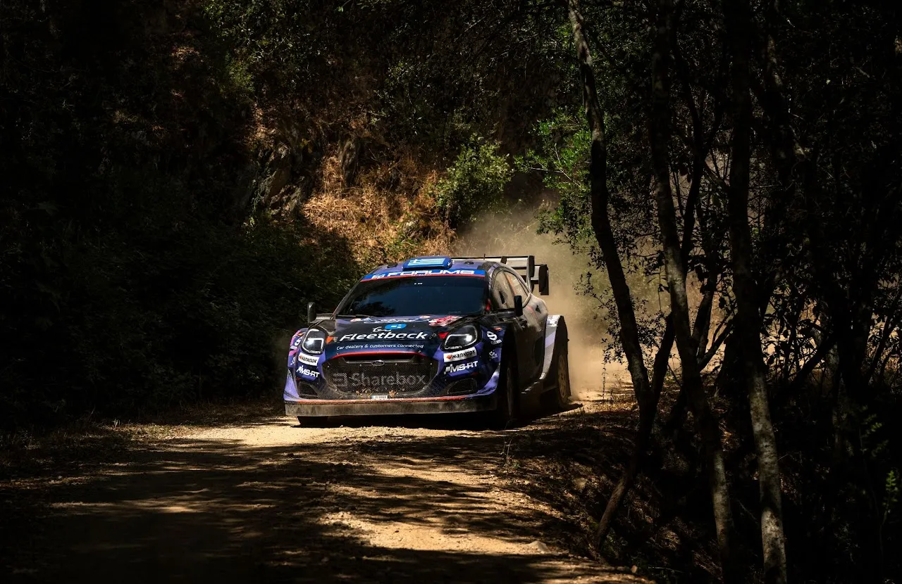
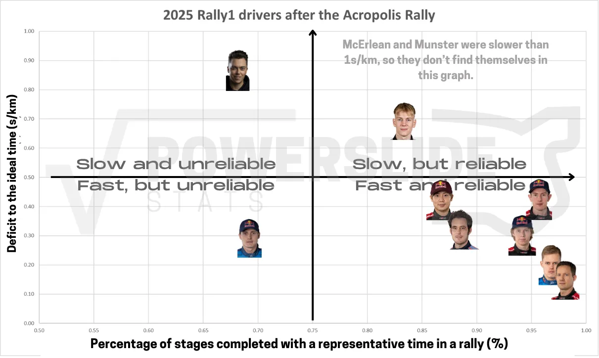
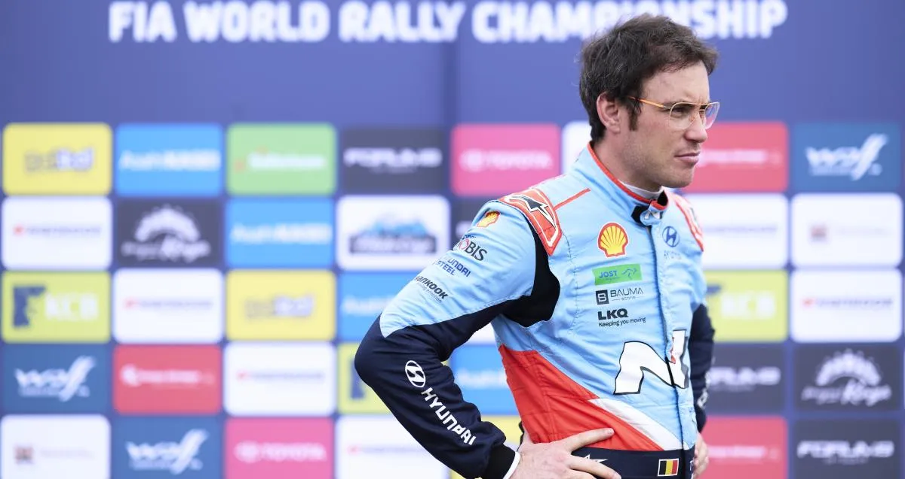
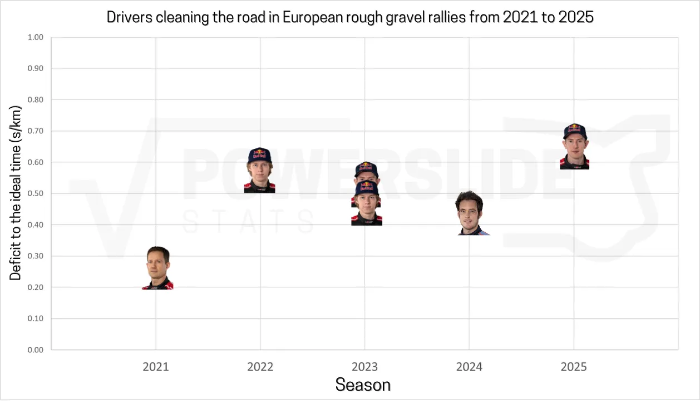
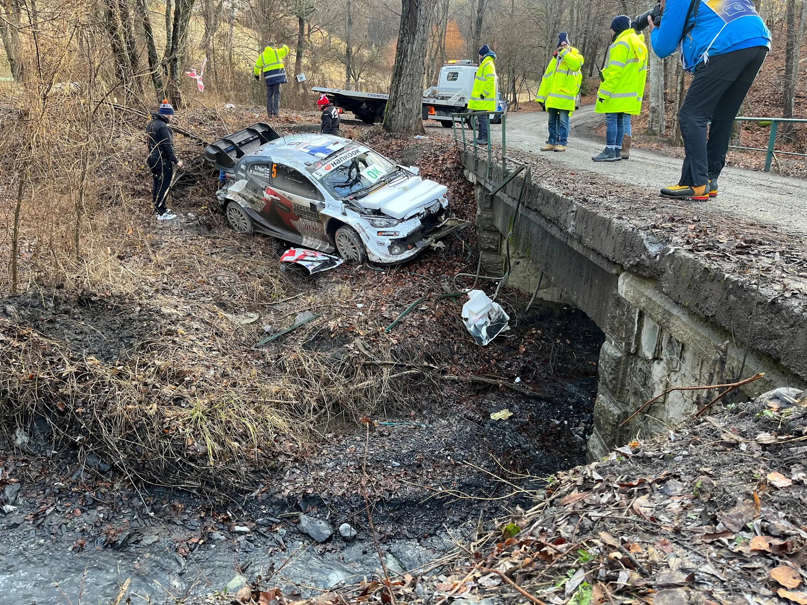
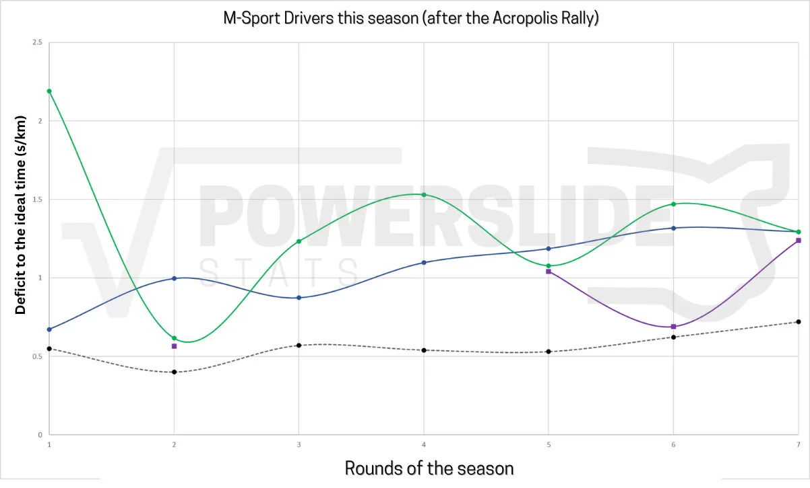
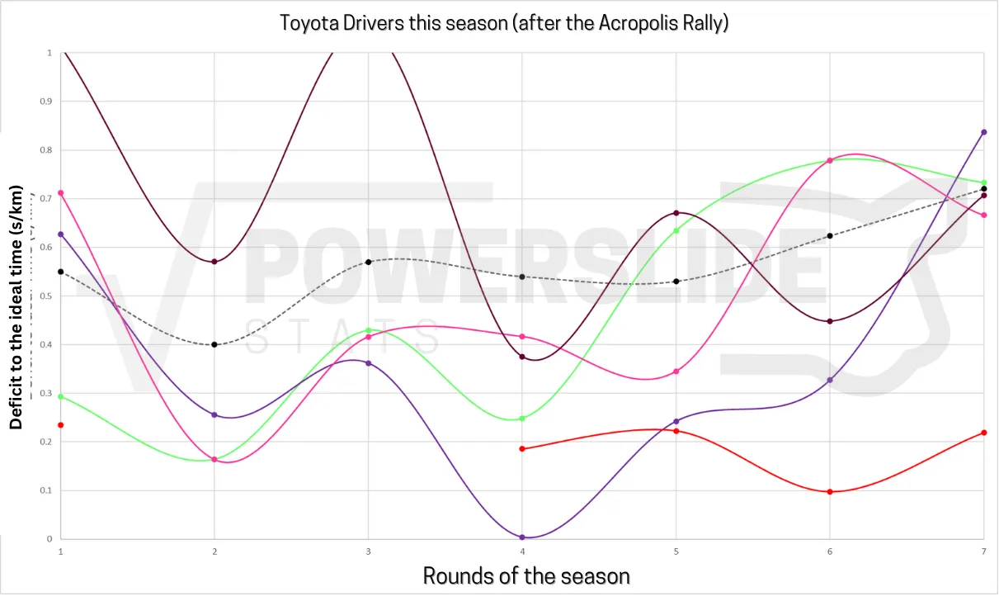
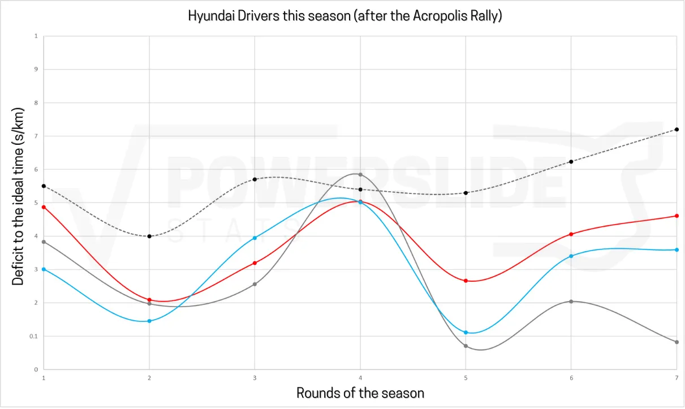

Powerslide Stats Centre: WRC 2025 mid-season review
Header: Zenor Designs
We've reached the mid-point of the 2025 WRC season, and there's quite a few interesting takeaways we can take from it. Just like last year, in this post we will try to find out who's been the fastest driver, who's been the most consistent, and whether some drivers have improved or regressed compared to last year.
Before we dive in, let's break down how these numbers are determined! There are two key variables: Deficit to Ideal Time (measured in seconds per kilometer) and Percentage of Stages Completed with a Representative Time (expressed as a percentage). The first variable, Deficit to Ideal Time, reflects a driver's speed. It is calculated by comparing the driver's performance to the ideal pace, where the ideal pace is defined as a driver who won all the stages. Essentially, this shows how fast or slow a driver was throughout the season.
The second variable, Percentage of Stages Completed with a Representative Time, relates to a driver's reliability. This percentage is based on the number of stages a driver completed within a competitive time relative to the total number of stages in the season, excluding super special stages (SSSs). A non-representative time might occur when a driver faces issues like mechanical problems, punctures, wrong tyre choices, or is simply cruising.
To determine if a time is non-representative, it is compared to times from either the previous run of the stage or times from the same loop. If the time has a deficit of more than 160% of the previous pass or loop average, it is classified as non-representative. For this season, mechanical issues are taken into consideration, and don't hurt a driver's reliability/consistency score.
So here's how every driver has performed this year at the mid-point of the season.
If we put this data onto a graph, we can have a better picture of where everyone stands after the first 7 rallies of the season. The higher a driver is on the Y axis, the slower he is on average, and the more to the right he is on the X axis, the more consistent he is.

The majority of the WRC field finds itself in the "Fast and Reliable" section of the graph, which is a testament to how evenly matched the top drivers are this year. Just like last year, Sebastien Ogier is both the fastest and the most consistent driver this year so far, and also has 3 wins to show for it, as well as 2nd place in the championship.
Kalle Rovanperä and Ott Tänak are the two fastest drivers from the full-timers. The Finn had one of the most dominant performances in the history of the sport in Canarias, winning all but two of the "real" stages of the rally. However the 2022 and 2023 champion has struggled with the Hankook tyres this year, for his standards anyway, with not so good performances in the opening rounds. Rovanperä also lost valuable points in Safari, after being forced to retire due to a mechanical issue. He also had a very bad Acropolis Rally, going off in Pavliani and suffering many punctures.
Tänak on the other hand has had the same speed he had compared to last year, also being the fastest driver in three rallies this year so far, in Kenya, Portugal and Acropolis. Sadly the Estonian has not been able to translate his good pace into more than one win so far this year.
Last year's championship winner Thierry Neuville has not really been himself this year. The Belgian is slower than last year, and has also only won 7 stages so far. He's also been as consistent, but he has still made mistakes in Monte-Carlo and Sardinia, rallies that he was the leader of at one point. Neuville showed good pace in Greece, but was ultimately let down by punctures as well as his i20's reliability on Sunday.

Neuville will need an otherworldy second half of the season if he is to retain his title crown
So what about current championship leader Elfyn Evans? Well curiously, Evans has been about as fast as he was last year at the mid-point, and slower compared to the end of last season. The Welshman has been extremely consistent though, having completed 96% of the stages this year so far. His tally of two wins, is double of what he had last year.
One of Evans' biggest flaws this year so far has been sweeping the road on rough gravel rallies, a surface in which he was the second slowest Rally1 last year. So how has he compared to other drivers from the recent past?

As you can see, Evans' performance on Fridays this year has been the worst since 2021. But his biggest flaw is that he actually can't get advantage of his better road position on Saturday and Sunday. Whereas all the rest have managed many podiums and also wins from first on the road, Evans' best finish is 4th in Sardinia and Greece.
As for Toyota's two other drivers, Takamoto Katsuta has had the same pace as he had last year, but the Japanese driver is ever so more consistent, with 87% of the stages he's competed in this year having a representative time, a 6% increase compared to 2024. He has still made mistakes though, crashing out in Monte-Carlo, Safari and Greece, so still, far from perfect.
Sami Pajari has not really impressed much on his first full time campaign. The young Finn's priority has been finishing rallies, and it shows, with the WRC2 champion finding himself in the "Slow but Consistent" part of the graph. Pajari has made mistakes though, crashing out of Monte Carlo and Canarias, as well as losing time due to mismanaging a puncture in Sardinia and from picking up one after hitting a snow bank in Sweden.

Adrien Fourmaux is the only driver featuring in the "Fast but inconsistent" part of the graph, and I think it perfectly sums up the Frenchman's season so far. Fourmaux was the fastest i20 in 3 rallies this year so far, in Monte Carlo, Sweden and Canarias. But crucially, Fourmaux's been making a lot more mistakes this year. Going off after making a mistake in Sweden, and then repeating the same mistake in Sardinia are prime examples of this. In Safari his car let him down en route to SS2, and after that his rally was ruined, and in Portugal, an innocent looking rock ended the Frenchman's chance at a maiden win.
Some of Fourmaux's retirements are circumstantial, but Sweden and Sardegna's offs were almost carbon copies of one another, with him pushing too much and going off after making a mistake, which is alarming.
He did return to good form in the Acropolis, grabbing his second podium of the season.
So, about M-Sport... They're in a league of their own, and not in a good way. Both of their full time drivers find themselves more than a second per kilometer off the pace after the Acropolis Rally. Martins Sesks is in the graph, but his perfomances this year are not reminiscent of his 2024 heroics. A solid Sweden was followed by a poor Portugal, and a disastrous Sardinia, in where the Latvian destroyed his Puma Rally1 on just the second stage of the rally. In Acropolis, a fuel related issue put him out of contention early on. He was still the fastest of his team mates despite being first on the road for Saturday.
McErlean was always in for a difficult 2025 season, with the Irishman not having the most of experience at the top level of the sport, never mind in Rally1 machinery. To be fair to him, he has improved rapidly from his debut in Monte Carlo, and has managed to beat his more experienced team mate Gregoire Munster a couple of times. He's still made mistakes though, going off in Sweden, Canarias and Sardinia, as well as breaking his suspension in Greece.
As for Munster, he has improved. But very marginally. The Luxemburger is still more than a second per kilometer slower this year so far, and has not made any big gains, something expected when someone is this slow, and is no longer a rookie.
M-Sport have been by far the team with the slowest drivers this year
Jaanus Ree / Red Bull Content Pool
In general, M-Sport's performance this year has been poor. So poor in fact that they've not had a driver be faster than the average pace in these first 7 rallies.

M-Sport drivers in each rally this year so far. With green it's Josh McErlean, with blue it's Gregoire Munster and with purple is Martins Sesks. The dotted line is the average pace deficit of each rally.
To compare the rest of the drivers and teams, the scale is different as you'll see below. For Toyota, you can clearly see Evans' pace drop off as the European rough gravel part of the championship started. You can also see Taka having impressive pace in Sweden and Safari, as well as Kalle's utter dominance in Canarias. You can also see Kalle and Evans' struggle in the Acropolis.

Toyota drivers in each rally this year so far. With green it's Elfyn Evans, with red it's Sebastien Ogier, with brown is Sami Pajari, with pink is Takamoto Katsuta and with purple is Kalle Rovanpera. The dotted line is the average pace deficit of each rally.
As for Hyundai, their three drivers have been quite evenly matched so far, with Neuville surpisingly being the slowest of the i20s this year so far. In the graph you can clearly see Canarias being an outlier in the team's pace, with all three drivers being a lot slower than the Toyotas.

Hyundai drivers in each rally this year so far. With gray is Ott Tanak, with red is Thierry Neuville and with light blue is Adrien Fourmaux. The dotted line is the average pace deficit of each rally.
As for who's been the fastest team this year, honestly Toyota has not been as dominant as the points table would let you believe. Hyundai were actually faster than the Japanese team in Safari, Portugal, Sardinia as well as in Greece, and they were evenly matched in Sweden. In all of those rallies, the team has missed out on wins due to mechanical issues or crashes.
The second half of the season features different kinds of rallies, with fast gravel rallies and more tarmac ones, so expect things to change by the end of the year! I'll leave you with a table comparing each driver's performance from 2024 to the mid point of this year.


Comments